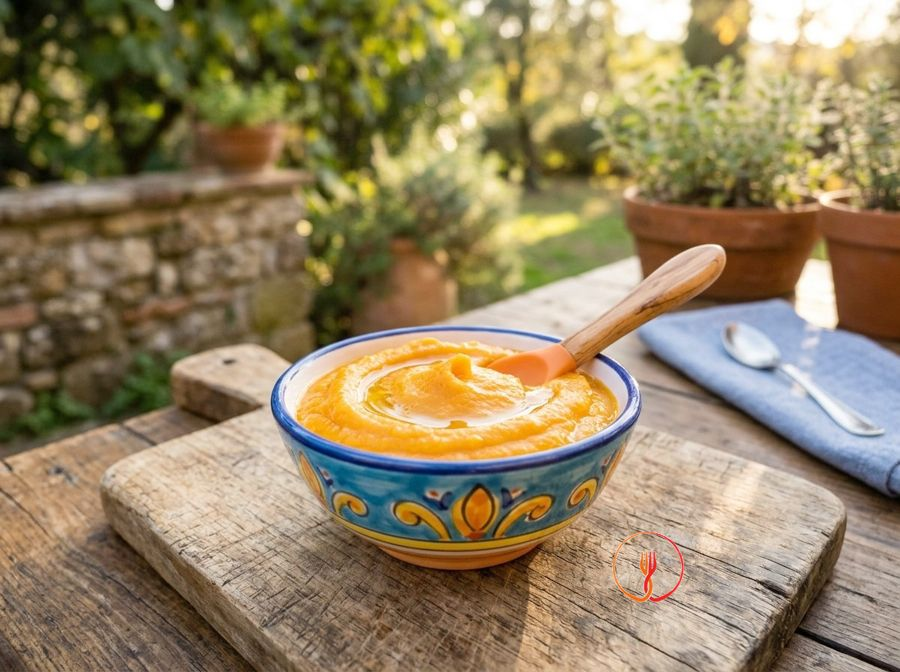

Purea di carote e patate
Purea dolce e vellutata dai 6 mesi.
Una purea soffice e dal colore invitante, preparata con il metodo della cottura a vapore per preservare l'intensità aromatica degli ingredienti. La carota apporta una nota dolce che si bilancia perfettamente con la consistenza farinosa della patata.
Ingredienti
- Carote (pulite)150 g
- Patate (pulite)100 g
- Olio extravergine d'oliva5 g
Allergeni
Nessuno dei 14 allergeni principali tra gli ingredienti.
Procedimento
- Lavare accuratamente le carote e la patata sotto acqua corrente fredda per eliminare residui di terra.
- Pelare le verdure con un pelapatate e rimuovere le estremità delle carote.
- Tagliare le carote e la patata a cubetti uniformi di circa 1,5 cm per assicurare una cottura omogenea.
- Preparare la vaporiera portando l'acqua a ebollizione nel serbatoio sottostante.
- Disporre i cubetti di verdura nel cestello forato e cuocere a vapore per 15-18 minuti, coprendo con il coperchio.
- Verificare la cottura: le verdure devono essere estremamente tenere quando infilzate con i rebbi di una forchetta.
- Trasferire le verdure in un blender o utilizzare un frullatore a immersione, aggiungendo 30-40 ml di acqua di cottura per regolare la densità.
- Frullare alla massima potenza fino a ottenere una vellutata liscia, omogenea e priva di grumi o fibre evidenti.
- Trasferire la purea nel piatto di servizio e incorporare l'olio extravergine d'oliva a crudo, mescolando con un cucchiaio.
- Controllare la temperatura della purea prima di somministrare il pasto al bambino.
Consigli
- Assicurati che l'acqua nella vaporiera sia già in ebollizione prima di inserire il cestello con le verdure.
- Schiaccia le verdure mentre sono ancora ben calde per evitare che la patata diventi eccessivamente elastica.
- Aggiungi l'olio extravergine d'oliva solo a crudo per mantenere inalterato il suo profilo aromatico.
Varianti
- Sostituisci la carota con della polpa di zucca cotta al vapore per una variante autunnale molto cremosa.
- Profuma la purea con un pizzico di noce moscata grattugiata se desideri un gusto più speziato.
Valori nutrizionali (stima)
| Per porzione (230 g) | Per 100 g | |
|---|---|---|
| Energia | 729 kJ / 174 kcal | 317 kJ / 76 kcal |
| Proteine | 3.4 g | 1.5 g |
| Carboidrati | 25 g | 11 g |
| di cui zuccheri | 7.8 g | 3.4 g |
| Grassi | 5.4 g | 2.3 g |
| di cui saturi | 0.8 g | 0.3 g |
| Fibre | 6.2 g | 2.7 g |
| Sale | 0.1 g | 0.04 g |
Valori stimati con l'AI su dati medi CREA / USDA: sono indicativi e non sostituiscono il parere di un medico o di un nutrizionista.
Apri la ricetta nell'app per la lista della spesa, le schede ingredienti e i negozi vicini.